1汉化规模（可逐条核验）
上面这个界面不是效果图，是仓库构建产物的实机运行截图。下面每个数字都能在仓库里用命令跑出来。
2125条
翻译条目
grep -c '<message' translations/zh_CN.ts
155个
界面模块（context）
grep -c '<context>' translations/zh_CN.ts
34页
中文用户手册
pdfinfo doc/IQmolUserGuide.pdf
0条
未完成条目
grep -c 'unfinished' translations/zh_CN.ts
这三个数字不是估计值，是发布时的实测快照。仓库里 10+ 份文档由
scripts/video/verify_doc_numbers.py
自动校验，数字漂移会直接让 CI 报错。
2界面实机截图
以下全部为编译完成版本在虚拟显示环境下真实运行、由 xdotool 驱动菜单后截取的运行态画面 —— 不是静态渲染的 .ui 文件。
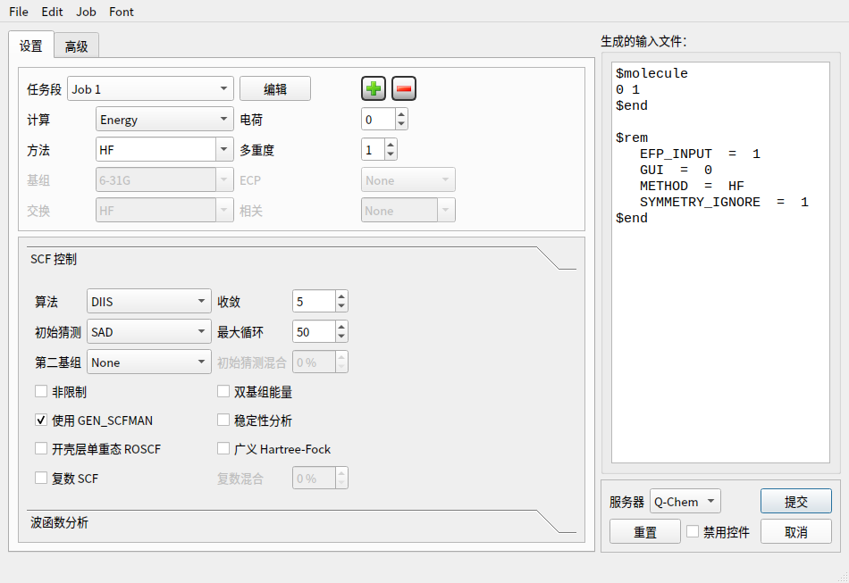
Q-Chem 设置任务段 · 计算类型 · 方法 · 基组 · SCF 控制 · 收敛 · 波函数分析
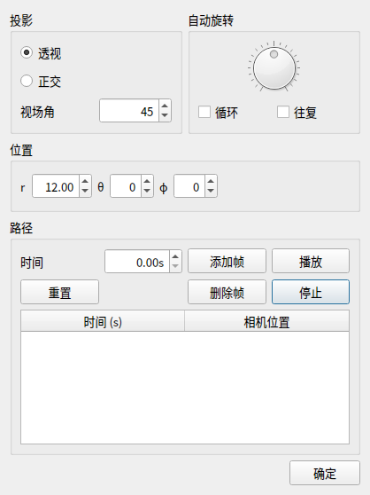
配置相机投影 · 自动旋转 · 位置参数 · 路径帧管理
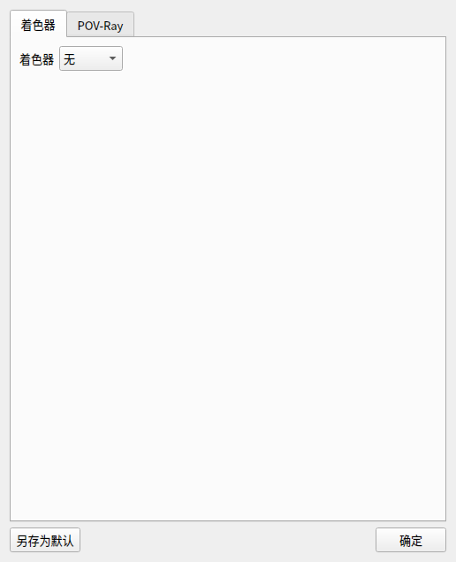
外观着色器 / POV-Ray 标签页
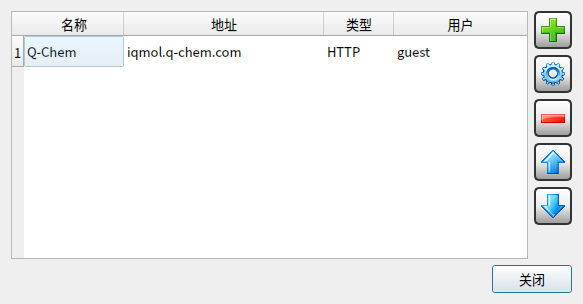
服务器列表名称 · 地址 · 类型 · 用户
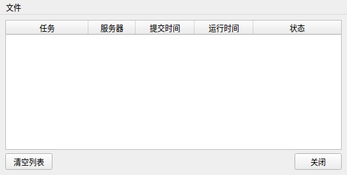
任务监视器任务 · 服务器 · 提交时间 · 运行时间 · 状态
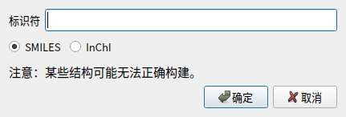
按 ID 插入分子标识符 · SMILES / InChI 双通道
3菜单栏（中英对照）
六个主菜单全部汉化。下方为实机展开截图。
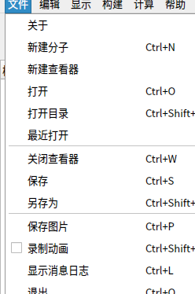
文件关于 / 新建 / 打开 / 保存 / 录制动画 / 退出
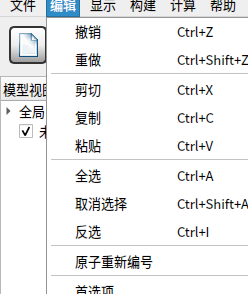
编辑撤销 / 重做 / 剪贴板 / 选择 / 首选项
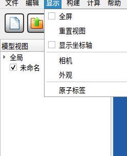
显示全屏 / 重置视图 / 坐标轴 / 相机 / 外观
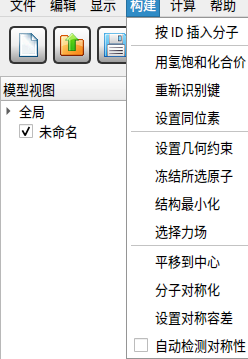
构建插入分子 / 饱和化合价 / 约束 / 力场 / 对称化
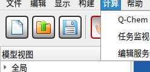
计算Q-Chem 设置 / 任务监视器 / 编辑服务器
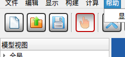
帮助用户手册 / Q-Chem 手册 / 关于
4下载与核验
Windows 包自包含（943 个条目、58 个 DLL），解压到任意目录双击 bin/IQmol.exe 即可，无需安装 Qt 或 MSYS2。
| 文件 | 平台 | 说明 |
|---|---|---|
| IQmol-win64-3.2.3-zh_CN.zip | Windows x64 | 推荐。免安装解压即用，含全部运行库 |
| IQmol-win64-3.2.3-zh_CN.7z | Windows x64 | 同上，压缩率更高（需 7-Zip） |
| IQmol-linux-x86_64.tar.gz | Linux x86_64 | 解压后 ./run.sh 即用（glibc 2.35+） |
| SHA256SUMS.txt | — | 校验和 |
# 三个数字自己跑一遍
grep -c '<message' translations/zh_CN.ts # → 2125
grep -c '<context>' translations/zh_CN.ts # → 155
pdfinfo doc/IQmolUserGuide.pdf # → Pages: 34
诚实的边界
· Q-Chem 是独立第三方组件，其对话框标题栏与 File / Edit / Job / Font 菜单仍为英文，不在汉化范围内。
· 上游源码中少量未走 tr() 包裹的运行期字符串（如历史记录中的 Repersceive bonds）仍会显示英文，属上游固有结构问题。
· 仅实测 Windows x64 与 Linux x86_64，macOS 未构建验证。
· Q-Chem 是独立第三方组件，其对话框标题栏与 File / Edit / Job / Font 菜单仍为英文，不在汉化范围内。
· 上游源码中少量未走 tr() 包裹的运行期字符串（如历史记录中的 Repersceive bonds）仍会显示英文，属上游固有结构问题。
· 仅实测 Windows x64 与 Linux x86_64，macOS 未构建验证。